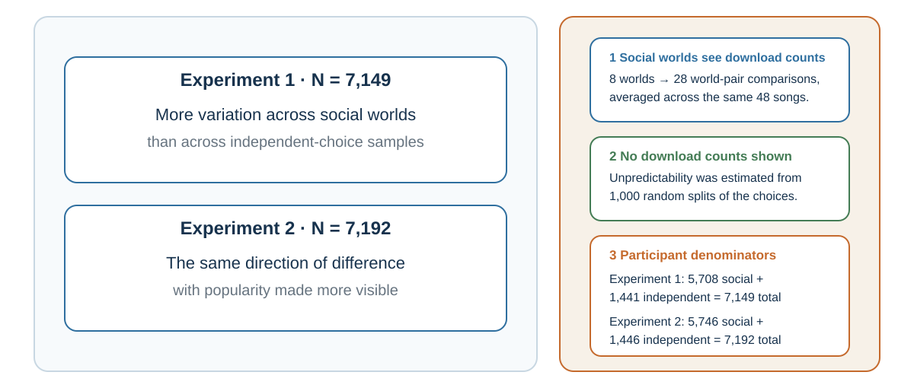

26 Social Learning, Conformity, and Cascades
Other people can supply evidence, social pressure, and copies of the same mistake
Learning goals
- Distinguish informational learning from normative pressure and independent convergence from correlated copying.
- Explain how cumulative culture, conformity, norms, popularity, and cascades can transmit both knowledge and error.
- Redesign one meeting or norm message so private evidence is elicited before public influence begins.
A solitary learner must discover every causal relation through personal trial and error. A social learner can watch, listen, imitate, ask, and inherit. The difference is enormous. A child does not derive a language from first principles. A medical student does not independently rediscover germ theory. A new employee learns which spreadsheet matters, which deadline is real, and which sentence from the formal procedure everyone quietly ignores.
Cumulative culture depends on social transmission with enough fidelity to preserve useful practices and enough variation to improve them. Human groups can retain techniques whose causal structure is not obvious to any one learner. Over generations, tools and institutions become more complex than a single person could plausibly invent alone (Boyd & Richerson, 1985; Henrich, 2016; Tomasello, 1999).
Social learning therefore solves an information problem. When direct evidence is expensive, ambiguous, or unavailable, another person’s behavior becomes a cue. If several experienced hikers turn back from a trail, their action may be better evidence than the blue sky above you. If every clinician in a unit checks a particular sign before discharge, the routine may contain knowledge that has not yet been made explicit.
The same mechanism creates vulnerability. People may copy a fashion because it is visible, a rumor because it is repeated, or a dangerous norm because everyone else appears calm. Social information is valuable precisely because it often works. A counterfeit signal is powerful only because the genuine signal is usually worth using.
This reframes influence. A person who follows others is not necessarily weak. They may be using a rational shortcut under uncertainty. The scientific task is to identify when social evidence is diagnostic and when it is self-generating.
Copying and cumulative culture
In a classic comparison, human children and chimpanzees watched an adult retrieve a reward from a puzzle box. Some demonstrated actions were causally necessary; others were not. When the box was transparent and the mechanism visible, chimpanzees tended to omit irrelevant actions and reproduce the efficient route. Children often copied both relevant and irrelevant steps (Horner & Whiten, 2005).
At first glance, the chimpanzee looks more rational. It extracts the causal structure and ignores theater. Yet children’s tendency toward overimitation may serve a different problem. A learner cannot always know which step is irrelevant. A tap, gesture, sequence, or preparation may carry hidden causal information, social meaning, safety value, or conventional significance. High-fidelity copying can preserve opaque practices until their function becomes clear (Lyons et al., 2007).
The lesson is not that children blindly imitate everything. Human copying is sensitive to intention, pedagogy, group membership, convention, and context. Nor is overimitation always beneficial. It can preserve needless bureaucracy as effectively as useful craft. An organization may continue a reporting ritual because “this is how it is done” even after the original risk has vanished.
What looks locally inefficient can be culturally intelligent. What looks culturally faithful can also become institutional inertia.
A practical diagnostic is to ask two questions about a copied practice:
What hidden function might this step preserve?
What evidence would justify removing it?
The first protects against arrogant simplification. The second protects against ritual without learning.
Social observation also requires causal explanation. When a colleague misses a deadline, the attribution audit developed in Beliefs That Defend Themselves asks which evidence would distinguish character, incentive, information, and constraint accounts before a convenient story selects the next policy.
Other people as living data
Social influence begins with a practical problem: the world is uncertain, and no individual can learn everything alone.
If you arrive in a new city, you look at where locals eat, how people use public transport, which streets feel safe, and what behaviors attract disapproval. If you start a new job, you learn not only from formal rules but from how colleagues actually behave: when they speak, how they disagree, what they joke about, which deadlines matter, and how bad news is handled. If you enter a negotiation, you read tone, posture, silence, and the other side’s reactions. If you buy online, you look at ratings, reviews, downloads, likes, and testimonials.
Other people reduce uncertainty. They are living data.
This is why humans are powerful social learners. We do not learn only through direct trial and error. We learn by observing, imitating, teaching, and participating in shared practices. Tomasello (1999) argued that human cultural learning depends on capacities for shared attention, imitation, intention reading, and teaching. Boyd, Richerson, and Henrich (2011) argue that human success depends heavily on cumulative culture: knowledge and practices built across generations through social learning rather than reinvented individually.
Social learning is efficient because individual learning is costly. It is better to learn from someone else that a plant is poisonous than to test it yourself. It is better to learn from experienced colleagues how a system works than to discover every failure mode personally. It is better to learn professional norms from mentors than to violate them repeatedly.
People often use social learning selectively. They imitate successful people, prestigious people, similar people, older people, experts, high-status individuals, or the majority. Prestige-biased learning can be adaptive when prestige tracks skill or knowledge (Henrich & Gil-White, 2001). Majority-biased learning can be adaptive when many independent people converge on a useful behavior (Boyd & Richerson, 1985). Similarity-biased learning can be adaptive when people like us face similar problems. These capacities are part of a broader human system for sharing intentions and cultural knowledge (Tomasello et al., 2005).
But these social-learning rules can also fail. Prestige may reflect status rather than competence. Majorities may be wrong because they are copying one another. Similar others may share the same blind spots. An expert in one domain may be treated as an expert in another. A successful person may be lucky. A popular belief may be familiar rather than true.
Social influence therefore begins with a tension. Other people are indispensable sources of information, but they are not neutral evidence. Their behavior is shaped by their own incentives, ignorance, norms, identities, and previous social influence.
A useful question is:
Am I learning from independent evidence, or am I learning from people who may be copying one another?
This question will return later when we discuss collective expectations and asset bubbles. If everyone is looking at everyone else, the group may become confident without anyone having direct knowledge.
| Social cue | Why it can be useful | Failure mode | Test |
|---|---|---|---|
| Prestige | May summarize recognized expertise. | Status spills across domains. | What relevant performance earned the prestige? |
| Majority behavior | Can aggregate independent experience. | People may be copying the same source. | How independent are the judgments? |
| Similarity | Similar people may face similar constraints. | Shared identity can share the same blind spot. | Which similarities are decision-relevant? |
| Mimicry / synchrony | Can signal responsiveness and rapport. | Performed similarity becomes manipulation. | Does attunement improve mutual understanding? |
| Attribution | Creates a causal model for the next action. | Character stories hide situational constraints. | What question would discriminate among explanations? |
Conformity can inform or merely expose pressure
Sherif’s autokinetic studies asked people to estimate the apparent movement of a stationary light in darkness. Individual estimates varied; group estimates converged (Sherif, 1936). Under ambiguity, other judgments provided information and a shared norm emerged.
Asch’s line-judgment studies changed the problem. The correct answer was visible, yet some participants publicly agreed with a unanimous wrong majority (Asch, 1956). Deutsch and Gerard (1955) distinguished informational influence, following others to be correct, from normative influence, following to avoid disapproval or visible deviance. Real situations mix them.
Conformity is not inherently defective. Shared conventions make traffic, queues, meetings, and safety routines possible. The danger is that public agreement does not reveal private belief. Group size, task ambiguity, status, public response, and unanimity change the pressure; even one dissenter can make disagreement socially possible. The organizational question is therefore: What would someone hesitate to say here, even if it were true?
Norms say what people do and what they approve
A descriptive norm reports what people do. An injunctive norm reports what people approve (Cialdini et al., 1990). The distinction matters because a message can condemn a behavior while advertising that it is common.

Hotel guests were more likely to reuse towels when a sign described reuse by guests in the same room than under a standard environmental appeal in Goldstein et al.’s (2008) setting. Schultz et al. (2007) found that high-using households reduced energy use after comparison with neighbors, but low-using households could increase unless an injunctive approval cue accompanied the feedback. These results illustrate both social information and a boomerang risk.
When undesirable behavior is common, broadcasting its prevalence can normalize it. A national-park message emphasizing how many visitors stole petrified wood increased theft in one field study (Cialdini et al., 2006). A truthful design should therefore test the reference group, prevalence, privacy, and whether an injunctive or dynamic norm communicates the goal without making harm look ordinary.
A dynamic norm reports a verified trend when the desired behavior is not yet common—for example, that more households are reducing food waste—rather than pretending that the majority has already changed (Sparkman & Walton, 2017). Choice Architecture develops when this design can help and the safeguards it requires. People may also underdetect how strongly descriptive norms affect their own behavior, which is one reason introspection alone is a poor norm audit (Nolan et al., 2008).
Popularity can become a cascade
Social proof is useful when relevant, independent people have converged. It becomes weaker when later actors mainly copy early public choices. In an informational cascade, people can rationally set aside a private signal because earlier actions appear informative; once that happens, later actions add visibility without adding independent evidence (Bikhchandani et al., 1992).
Digital counts make the dual role visible. Ratings, likes, downloads, and bestseller labels report earlier choices and influence later choices. In Salganik et al.’s (2006) experimental cultural markets, showing download counts made success more unequal and outcomes more variable across parallel worlds. Quality still mattered, but early accidents were amplified.

The same logic travels to hiring, technology adoption, investment, and organizational strategy. Popularity may reflect quality; it may also partly produce the success later used to validate it. Ask whether the public observations share a source, whether the display changed the behavior, and what private evidence was suppressed.
Independence before discussion
The most reusable intervention is procedural:
- Elicit initial judgments, forecasts, or concerns privately.
- Preserve reasons and confidence, not only a vote.
- Display the distribution before the highest-status person argues.
- Invite the strongest contrary evidence and one designated ally for dissent.
- Deliberate, revise, and record what changed.
This sequence does not require permanent isolation. It preserves information before coordination pressure makes all observations look alike. It also prepares the decision-hygiene finale: a group learns more when it can distinguish convergence after independent observation from convergence produced by the meeting itself.
Practice Lab
Redesign one hiring, investment, safety, or project meeting. Produce a before-and-after process map showing when private signals are collected, what social information is displayed, whose judgments may be correlated, how one dissenter receives an ally, and how revisions are recorded. Add one descriptive norm message and one injunctive version, then state the backfire risk of each.
Take it forward
- Use this when a majority, rating, trend, or silent room is being treated as evidence.
- Do not infer independence, private agreement, quality, or causal proof from public convergence alone.
- Try this next by collecting judgments privately before discussion and tracing which observations share the same source.
References cited in this chapter
Boyd, R., & Richerson, P. J. (1985). Culture and the evolutionary process. University of Chicago Press.
Boyd, R., Richerson, P. J., & Henrich, J. (2011). The cultural niche: Why social learning is essential for human adaptation. Proceedings of the National Academy of Sciences, 108(Supplement 2), 10918–10925.
Chartrand, T. L., & Bargh, J. A. (1999). The chameleon effect: The perception-behavior link and social interaction. Journal of Personality and Social Psychology, 76(6), 893–910.
Chartrand, T. L., & Lakin, J. L. (2013). The antecedents and consequences of human behavioral mimicry. Annual Review of Psychology, 64, 285–308.
Dunbar, R. I. M. (1992). Neocortex size as a constraint on group size in primates. Journal of Human Evolution, 22(6), 469–493.
Henrich, J. (2016). The secret of our success: How culture is driving human evolution, domesticating our species, and making us smarter. Princeton University Press.
Henrich, J., & Gil-White, F. J. (2001). The evolution of prestige: Freely conferred deference as a mechanism for enhancing the benefits of cultural transmission. Evolution and Human Behavior, 22(3), 165–196.
Horner, V., & Whiten, A. (2005). Causal knowledge and imitation/emulation switching in chimpanzees (Pan troglodytes) and children (Homo sapiens). Animal Cognition, 8(3), 164-181.
Inoue, S., & Matsuzawa, T. (2007). Working memory of numerals in chimpanzees. Current Biology, 17(23), R1004–R1005.
Lyons, D. E., Young, A. G., & Keil, F. C. (2007). The hidden structure of overimitation. Proceedings of the National Academy of Sciences, 104(50), 19751–19756.
Martin, C. F., Bhui, R., Bossaerts, P., Matsuzawa, T., & Camerer, C. (2014). Chimpanzee choice rates in competitive games match equilibrium game theory predictions. Scientific Reports, 4, 5182.
Sallet, J., Mars, R. B., Noonan, M. P., Andersson, J. L., O’Reilly, J. X., Jbabdi, S., Croxson, P. L., Jenkinson, M., Miller, K. L., & Rushworth, M. F. S. (2011). Social network size affects neural circuits in macaques. Science, 334(6056), 697–700.
Tomasello, M. (1999). The cultural origins of human cognition. Harvard University Press.
Tomasello, M., Carpenter, M., Call, J., Behne, T., & Moll, H. (2005). Understanding and sharing intentions: The origins of cultural cognition. Behavioral and Brain Sciences, 28(5), 675–691.
van Baaren, R. B., Holland, R. W., Kawakami, K., & van Knippenberg, A. (2004). Mimicry and prosocial behavior. Psychological Science, 15(1), 71-74.
Asch, S. E. (1956). Studies of independence and conformity: I. A minority of one against a unanimous majority. Psychological Monographs: General and Applied, 70(9), 1–70.
Bikhchandani, S., Hirshleifer, D., & Welch, I. (1992). A theory of fads, fashion, custom, and cultural change as informational cascades. Journal of Political Economy, 100(5), 992–1026.
Bond, R., & Smith, P. B. (1996). Culture and conformity: A meta-analysis of studies using Asch’s line judgment task. Psychological Bulletin, 119(1), 111–137.
Cialdini, R. B., Demaine, L. J., Sagarin, B. J., Barrett, D. W., Rhoads, K., & Winter, P. L. (2006). Managing social norms for persuasive impact. Social Influence, 1(1), 3–15.
Cialdini, R. B., Reno, R. R., & Kallgren, C. A. (1990). A focus theory of normative conduct. Journal of Personality and Social Psychology, 58(6), 1015–1026.
Deutsch, M., & Gerard, H. B. (1955). A study of normative and informational social influences upon individual judgment. Journal of Abnormal and Social Psychology, 51(3), 629–636.
Goldstein, N. J., Cialdini, R. B., & Griskevicius, V. (2008). A room with a viewpoint: Using social norms to motivate environmental conservation in hotels. Journal of Consumer Research, 35(3), 472–482.
Nolan, J. M., Schultz, P. W., Cialdini, R. B., Goldstein, N. J., & Griskevicius, V. (2008). Normative social influence is underdetected. Personality and Social Psychology Bulletin, 34(7), 913–923.
Salganik, M. J., Dodds, P. S., & Watts, D. J. (2006). Experimental study of inequality and unpredictability in an artificial cultural market. Science, 311(5762), 854–856.
Sherif, M. (1936). The psychology of social norms. Harper.
Schultz, P. W., Nolan, J. M., Cialdini, R. B., Goldstein, N. J., & Griskevicius, V. (2007). The constructive, destructive, and reconstructive power of social norms. Psychological Science, 18(5), 429–434.
Sparkman, G., & Walton, G. M. (2017). Dynamic norms promote sustainable behavior, even if it is counternormative. Psychological Science, 28(11), 1663–1674.